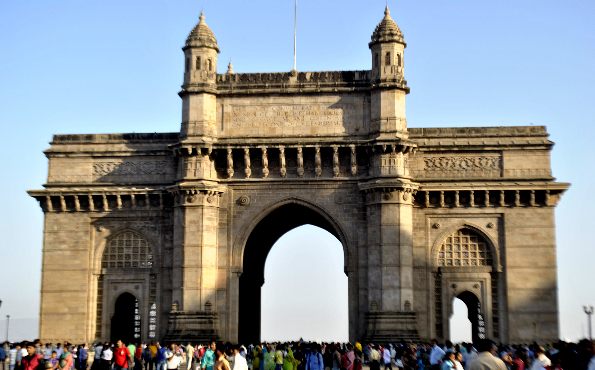
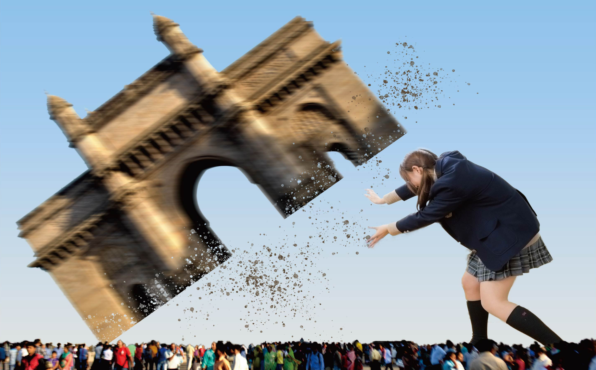
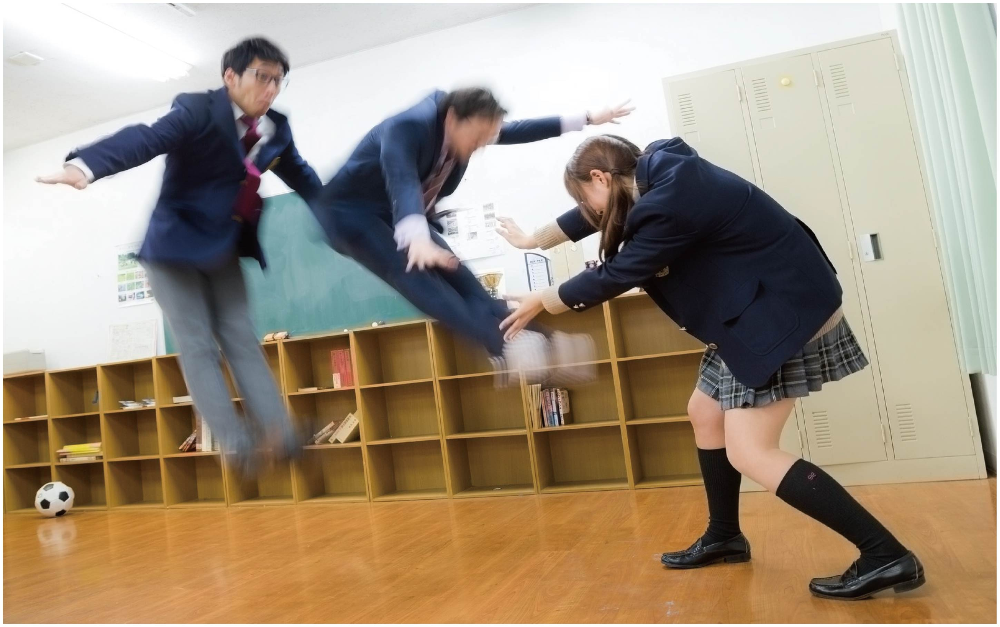

特大JK
Photoshop


AdobeのPhotoshopを使って、簡単なコラージュを作成してみました。
様々な選択ツールで建物や女の子をマスキングして切り取り、配置したあとは特殊ブラシを使って建物を持ち上げたときのガレキを表現しています。
背景の空模様は、上手く塗りつぶせなかったのでグラデーションを乗せています。

Photoshop
AdobeのPhotoshopを使って、簡単なコラージュを作成してみました。
様々な選択ツールで建物や女の子をマスキングして切り取り、配置したあとは特殊ブラシを使って建物を持ち上げたときのガレキを表現しています。
背景の空模様は、上手く塗りつぶせなかったのでグラデーションを乗せています。